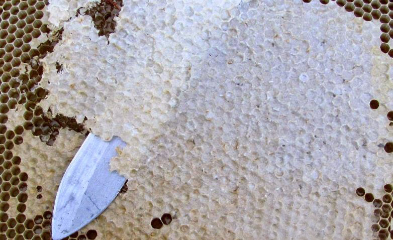
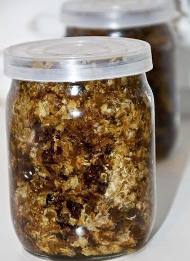

Приступаючи до відкачування меду, бджоляр передусім повинен роздрукувати рамку з медом. Гострим пасічним ножем він
неквапливо і акуратно, так щоб не пошкодити стільники, зрізує воскові кришечки, якими бджоли запечатали свої запаси.
Ці воскові кришечки, по суті своїй, представляють відходи бджільництва, і називаються забрусом.
З іншого боку, відходами їх можна назвати з великою натяжкою, адже користь забруса для людського організму воістину
велика. Високий вміст прополісу робить лікування забрусом справжньою панацеєю від більшості захворювань верхніх
дихальних шляхів.
Адже просте жування воскових кришечок :
- дезинфікує порожнину рота;
- усуває кровотечу ясен і зміцнює їх, позбавляючи від парадонтозу;
- лікує гайморит, риніти і звичайну нежить;
- ангіни і аденоїди у дітей;
- зміцнює зуби і усуває карієс;
- покращує секреторну функцію шлунку і підвищує сокоотделение, покращуючи апетит;
Безперечною властивістю забруса є відсутність алергічних реакцій, навіть при його постійному вживанні. Так що лікування
забрусом можна сміливо рекомендувати як дітям, так і особам, що страждають різного роду аллергиями. Якщо навіть на якийсь
час воскові кришечки замінять діточкам такі улюблені ними цукерки і інші штучні солодощі, то придбаний в результаті
простого жування цього пчелопродукта імунітет збережеться у них на протязі як мінімум чотирьох років!

Окрім воску і прополісу у складі воскових кришечок виявляються квітковий пилок і виділення слинових залоз бджіл.
Інша назва забруса - печатка. Вона буває двох видів мокра(коли стільники доверху заповнені медом) і суха. У другому
випадку стільники залиті медом не повністю і воскові кришечки не стикаються з ним зсередини. Саме ж слово "забрус"
прийшло до нас із старовини. Уперше воно зустрічається ще в древніх новгородських літописах, коли Русь торгувала
восковою печаткою нарівні з медом. У ті далекі часи забрус пудами продавався в Європу.
Зрізані воскові кришечки я
зазвичай складаю в скляні банки і заливаю медом. Виходять не лише смачні і корисні ласощі, але і приємний оздоровчий
засіб, дарований нам самою природою.
Бережи зуби змолоду - жуй забрус! І пам'ятай: Ретельно пережовуючи забрус ти
допомагаєш суспільству!